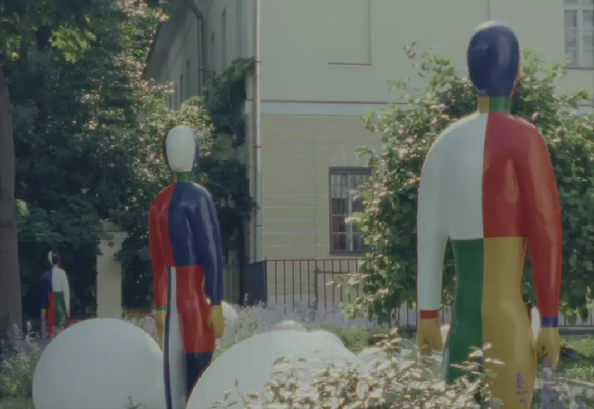

capsl — Screenshot Journal App
Take a screenshot.
Remember everything.
capsl extracts what matters from your screenshots and keeps it organized.
capsl knows what matters
Music, recipes, research, shopping lists — whatever you screenshot, organized beautifully.

Find anything instantly
That song from last month. The article you saved in July. Type a few letters — capsl finds it.

"Stop thinking about yourself. Stop thinking about your plans..."
"Screenshots get lost. I kept saving things I wanted to remember, but could never find them. So I built capsl — a personal library from everything you save."